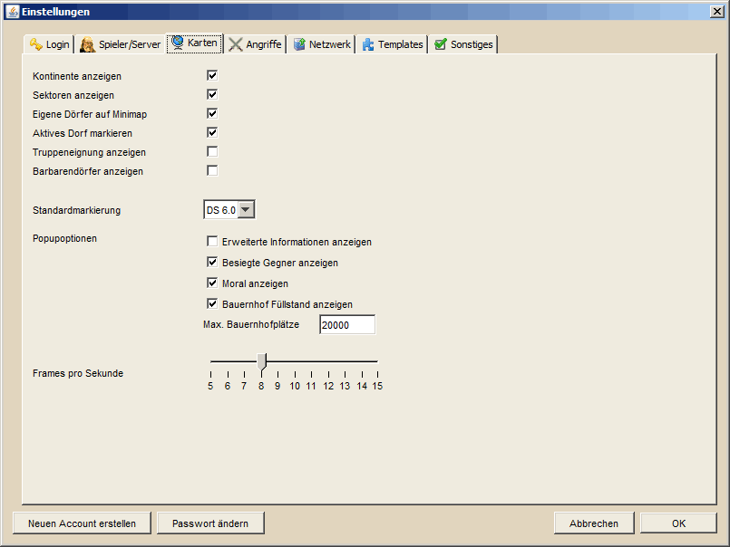

Karteneinstellungen |
|
| |
|  |
| |
| Die Karteneinstellungen enthalten alle Einstellungen die für die Darstellung von und auf der Hauptkarte und der Minimap verantwortlich sind. Die Einstellungen haben die folgenden Funktionen: |
| |
|
| Kontinente anzeigen |
Das Kontinentraster auf der Hauptkarte und der Minimap anzeigen / verbergen |
|
| Sektoren anzeigen |
Das Sektorenraster auf der Hauptkarte anzeigen / verbergen |
|
| Eigene Dörfer auf Minimap |
Die Dörfer des aktuell gewählten In-Game Spielers auf der Minimap gelb markieren |
|
| Barbarendörfer anzeigen |
Barbarendörfer werden auf der Hauptkarte und der Minimap gezeichnet / nicht gezeichnet |
|
| Standardmarkierung |
Gibt an, welche Farbe die Markierungspunkte der Dörfer haben, wenn keine eigene Markierung zu einem Dorf vorliegt |
|
| Popupoptionen |
Die Popupoptionen dienen dazu, das Informationspopup, welches auf der Hauptkarte erscheint sobald man den Mauszeiger über einem Dorf positioniert, mit entsprechend mehr oder weniger Informationen zu versehen. Der Werte "Max. Bauernhofplätze" gibt dabei an, ab welcher Truppenanzahl der Bauernhof als "voll" gekennzeichnet wird. |
|